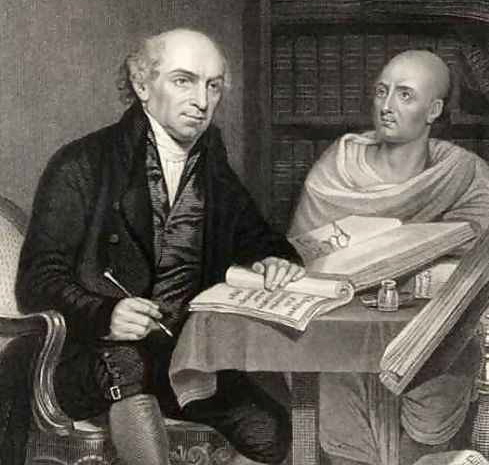

Share : Blesed to Many

Known as the father of modern missions, William Carey, along with his pregnant wife and daughter set sail in 1793 to Calcutta from London.
He was the first missionary to India who served for forty-one years in India.
Carey was deeply upset by an Indian practice called Sati which was a traditional funeral custom where if a man died, his body would be burned and his wife, or wives, would throw themselves onto the burning pyre in order to kill themselves. Sati was practiced for thousands of years because women were considered to have no value apart from their husbands. They believed that they had to go to the spirit land to continue serving their husbands after death. If a woman did not want to take part in this ceremony, she was forced onto the burning pyre to die.
He fought against this practice for more than 35 years until December 1829 when Sati was banned in the entire British Empire, including India.